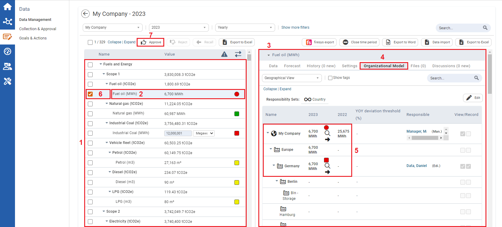
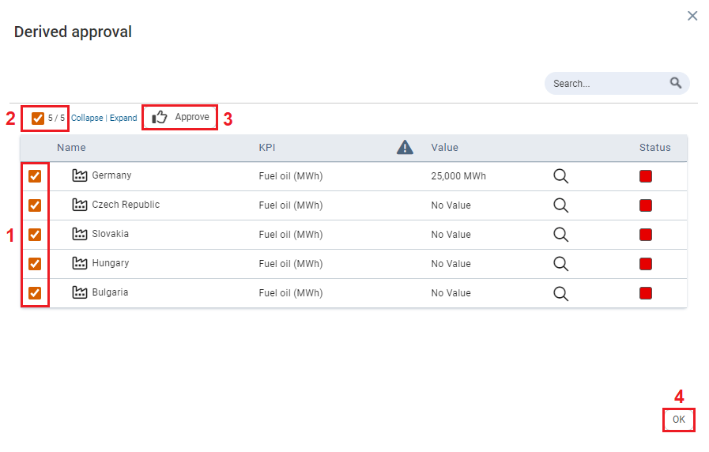

Derived approval is used when data from several locations for a KPI is grouped together in an aggregated view for review and approval.

| 1 | The KPIs you are responsible for will display here. |
| 2 | To view details of a KPI, click a KPI with a circle color status symbol. |
| 3 | Here you can see the details of the KPI selected. |
| 4 | Click the Organizational Model tab. |
| 5 | Here you can view the aggregated levels of a KPI. |
| 6 | To select KPIs for approval, select the checkbox in front of the KPIs. |
| 7 | Click Approve. The Derived approval pop-up window appears. |

| 1 | To select specific locations of where data was gathered from, for a single KPI, select the checkbox of specific location. |
| 2 | To select all KPIs and all the locations of where data was gathered, click the checkbox to the right of Approve on the Derived Approval window. This will update the value following the checkbox from 0/# to #/#. |
| 3 | Once you have selected everything you would like to approve, click Approve. |
| 4 | Click OK to close the window. |